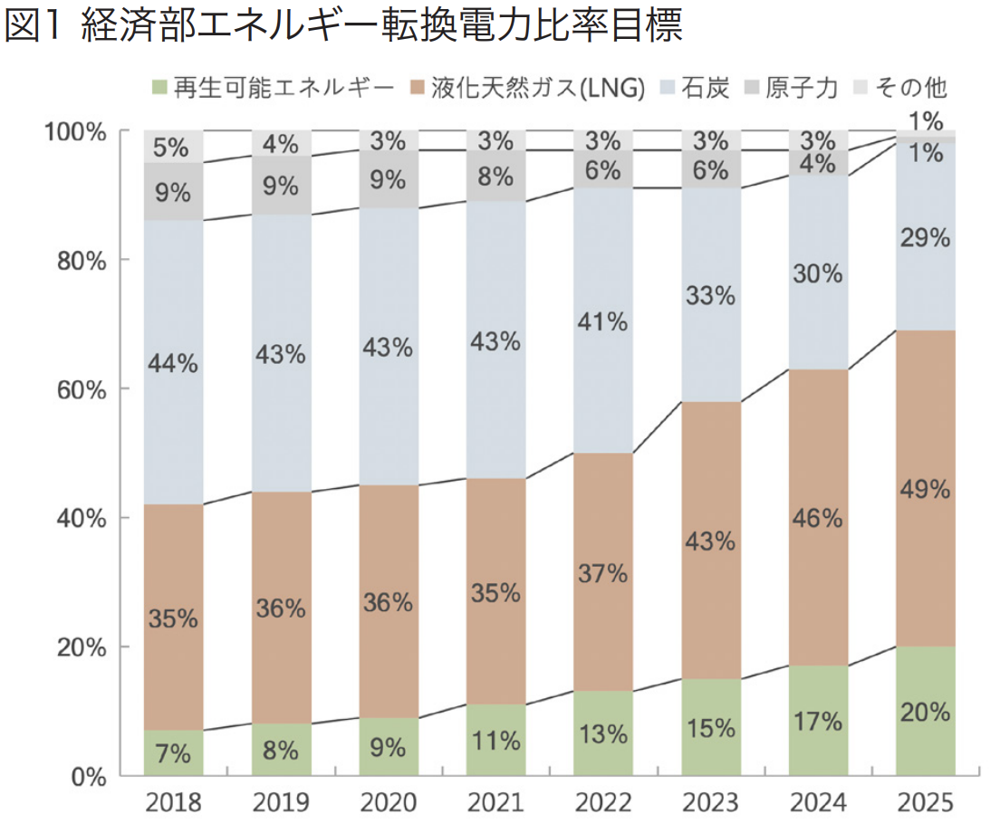
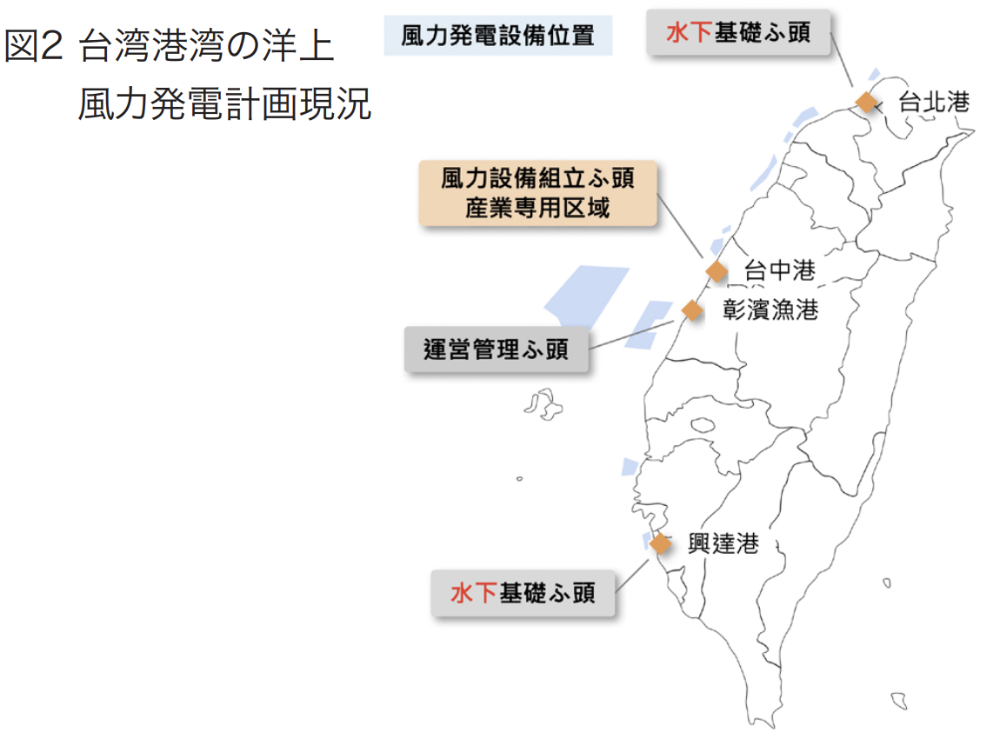

地球温室効果ガス削減に向けた環境保護の潮流に対応するため、蔡政権は就任後から積極的に再生可能エネルギー（以下再エ ネと省略）発展、天然ガスの安定拡大を具体的方向としてエネルギー転換を進めている。台湾はエネルギー資源の多くを輸入に 頼っているが、今後港湾での液化天然ガス（以下 LNG）供給需要の大幅増加が見込まれており、また再エネである洋上風力発電の 発展にも港湾側の支援が必要となる。これらを背景に、エネルギー転換期の港湾動向を中心に、港湾の LNG 事業、洋上風力の計 画概況を分析し日台企業間の協力可能性を探る。
台湾政府は世界規模のエネルギー産業発展の趨勢に対応す
べく、温室効果ガス削減を国家発展目標に掲げている。経済部
は積極的にエネルギー転換を推進し、石炭削減、LNG増加、再
エネ発展、脱原発のクリーンエネルギー発展を原則として、電力
安定供給を確保しながら、環境汚染や二酸化炭素排出量の低
減をめざしている。新たなエネルギー源や再エネの発展、LNGの
安定供給と利用拡大を進め、エネルギー分野の国際協力を戦
略的に推進する方針である。

経済部能源局が定めた将来のエネルギー発展目標では、
2025年のエネルギー比率を天然ガス49％、石炭29％、再エネ
20％、その他および原発が各１％となっており（図１参照）、計画
全体を通じて再エネやLNGを増やし、石炭比率を削減する方向
である。
一方で台湾はエネルギー源となる天然資源のほとんどない島
国であり、現在燃料の98％を輸入に頼っている状況である。エ
ネルギー発展目標実現に向け、LNGの輸入量が大幅に増加す
ることが予想されており、港湾はエネルギー燃料貨物受け入れ
の役割を担うこととなる。また主な再エネとして強力に政策推進
する洋上風力発展においても、港湾による協力が必要である。
エネルギー転換目標達成のため、台湾では徐々に石炭火力の
比率を低減し、LNG火力の比率を増加させている。2019年の世
界ガス会議(International Gas Union, IGU)統計によると、台
湾はLNG輸入が世界で5番目に多い国であり、年間の輸入量が
約1,670万トンある。また台湾中油（CPC）が主要な調達輸入専
門機関となっているが、現在の港湾LNG受入基地は台湾中油
の高雄永安と台中の2箇所のみで、年間処理能力は1,600万ト
ンで設備利用率が105％に達しており、既存の運営調整や運搬
能力は深刻な飽和状態にある。
前述のエネルギー転換政策によれば2025年にはLNG比率
が50％に達し、経済部は台湾全国のLNG需要量が2025年に
2,490万トンにまで増加すると予測している。これらLNG目標を
みたすには、緊急にLNG受入基地を建設する必要がある。現在
台湾中油と台湾電力とがそれぞれ新たなLNG受入基地を計画
しており、2022年から2025年までの間に桃園観塘、台中港およ
び基隆港の3箇所にLNG受入基地が完成予定である。完成時
には台湾港湾のLNG受入基地設備の供給能力は3,270万トン
まで高めることができ、より多くのLNG受入対応が可能になる。
港湾はLNG輸入需要に対応する役割のほか、LNG燃料船舶
への燃料補給サービス（LNGバンカリング）の提供も注目すべき
役割といえる。船舶動力源の環境負荷を減らす潮流に合わせて
LNG燃料船舶数は成長を続けており、2025年には世界の船舶
総数の５％がLNG船舶になると予測されている。日本、中国、シ
ンガポール、韓国といった周辺の国々はLNGバンカリングサービ
スを港湾の基本機能と考えており、既にサービス提供を開始し
た。台湾の港湾はまだLNGバンカリングサービスは行っておら
ず、今後は国際的なLNGバンカリング需要や発展状況をみなが
ら、設置必要性について評価が必要となる。
台湾のエネルギー多様化、サステナビリティの実現目標に向
けて、台湾政府は積極的に洋上風力発電を推進しており、再エ
ネ発展を国の重要政策項目としている。経済部の計画によると、
まず陸上風力を先に開発し、続いて洋上風力開発を徐々に進め
る方法で計画されている。2020年と2025年の陸上風力装置の
設備容量目標はそれぞれ814MWと1,200MWに設定されてお
り、同じく洋 上 風力装 置の設 備 容 量目標は5 2 0 M Wと
5,500MWである。

向こう5年間の洋上風力供給が急成長、および海上工事や製
造作業の必要性から、港湾は必要に応じてふ頭の対応を調整
する必要がある。主に風力装置組立、海底基礎および運営管理
サービスの提供が必要である。台湾港湾の洋上風力発展計画
の現況は図2に図示のとおりとなっている。
なかでも、風力設備の組み立てには主にブレード、発電機、タ
ワー、電力系統といった主要モジュールに精密機械部品が数多
く使用されるため、関連産業の専用区域が風力設備を設置する
ふ頭区域に設置されれば、対応や運営を効率よく行うことが可
能になる。台中港周辺は機械産業が集積しており、近隣の洋上
風況も有利な条件にあるため、台湾の洋上風力の発電機設置ふ
頭および洋上風力産業の専門区域として計画されている。海底
基礎は洋上風力発電機モジュールの土台となるもので、１００
メートル以上の高さとなることが多く、広大な用地、充分な面積の
組立製造工場および大型鉄鋼部品保管スペースなどの関連産
業技術も必要である。現在、海底基礎は南部の興達港と北部の
台北港で大型部品や基礎の製造基地提供が計画されている。
運営管理では主に作業用船舶の係留や、海上メンテナンスサー
ビスの提供が必要となるが、通常は移動にかかるコストを削減す
るため、風力発電所近くの港湾が選ばれる。現在は風力発電所
に最も近い彰濱漁港が運営管理のふ頭として計画されている。
エネルギー転換政策の目標のもと、台湾では今後LNGと洋上
風力の需要が大幅に増加するが、港湾はサービス対応のため調
整が必要になることが予想されている。
台湾はLNG燃料を輸入に頼っており、2025年にはLNG比率を
50％に引き上げ、さらに新設の受入基地も完成することから、
LNG輸入需要の大幅増加が予想されている。日本は世界一の
LNG輸入大国であると同時に、アジアのLNG取引センター化に
も積極的である。将来LNG調達で日台が協力する可能性が、今
後注目される。そのほか、LNG船舶比率増加により、各国の港湾
がLNGバンカリング設置計画を積極的に進める一方で台湾は
未着手であり、今後台湾での設置需要や必要性に関して評価
が必要である。
更に、洋上風力は台湾の再エネ転換で重要な位置を占めて
おり、台湾政府は台中港を洋上風力専門区域とする計画であ
る。国内外の関連企業が進出し、台中港で洋上風力産業チェー
ンが構築されることで、台湾の再エネ経済発展を促進し、関連
産業の需要がさらに高まることが期待される。